LA LITERATURA DEL SIGLO XIX.
ROMANTICISMO
IES TORRE DEL REI
Prof. Nuria Ribés
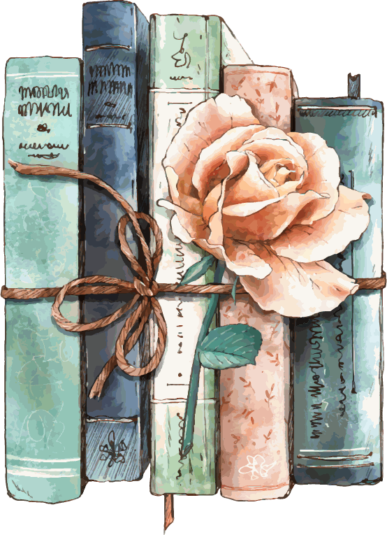
CONTENIDOS
- ❈ Contexto histórico. 1ª mitad siglo XIX
- ❈ El Romanticismo:
- ❂ Características generales
- ❂ Poesía romántica
- José de Espronceda
- Bécquer
- Escritoras románticas
- ❂ Prosa romántica
- Larra
- ❂ Teatro romántico
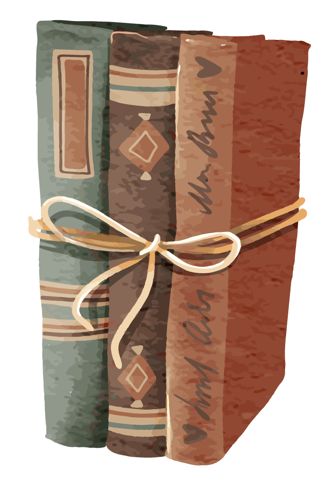
CONTEXTO HISTÓRICO
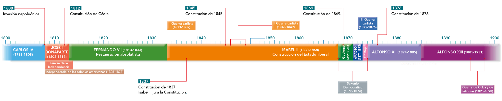
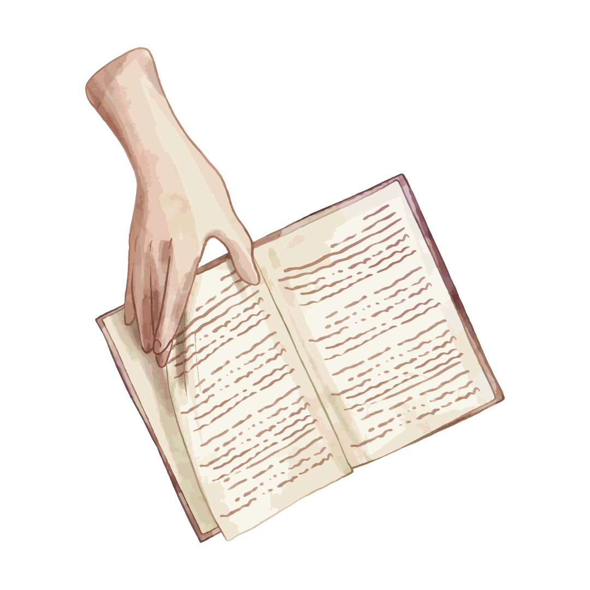
CONTEXTO HISTÓRICO
Un comienzo de siglo de gran inestabilidad…
- ❈ La Guerra de la Independencia (1808-1814)
- 1812: la constitución de Cádiz (la Pepa)
- ❈ Fernando VII (1814-1833): la restauración del absolutismo
- ❈ El reinado de Isabel II (1833-1868)
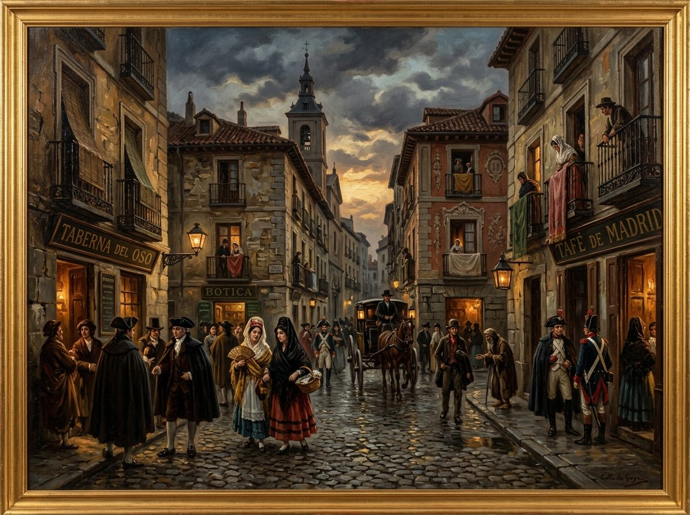
EL ROMANTICISMO. Antes de empezar…
¿Qué entiendes por Romanticismo literario?
Explícalo en dos o tres líneas.
EL ROMANTICISMO. Evolución temas y formas
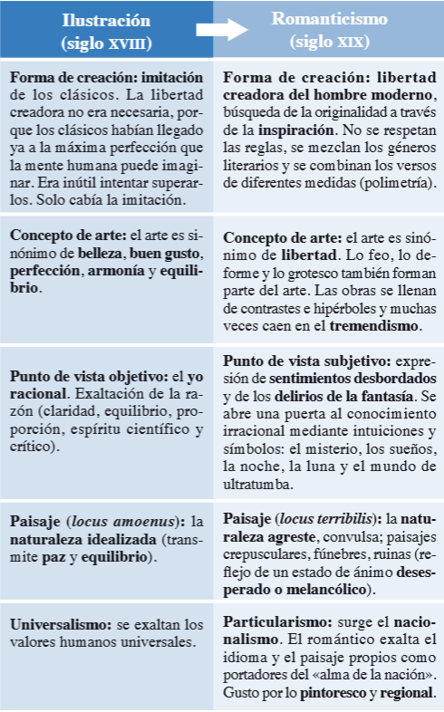
EL ROMANTICISMO. Características generales
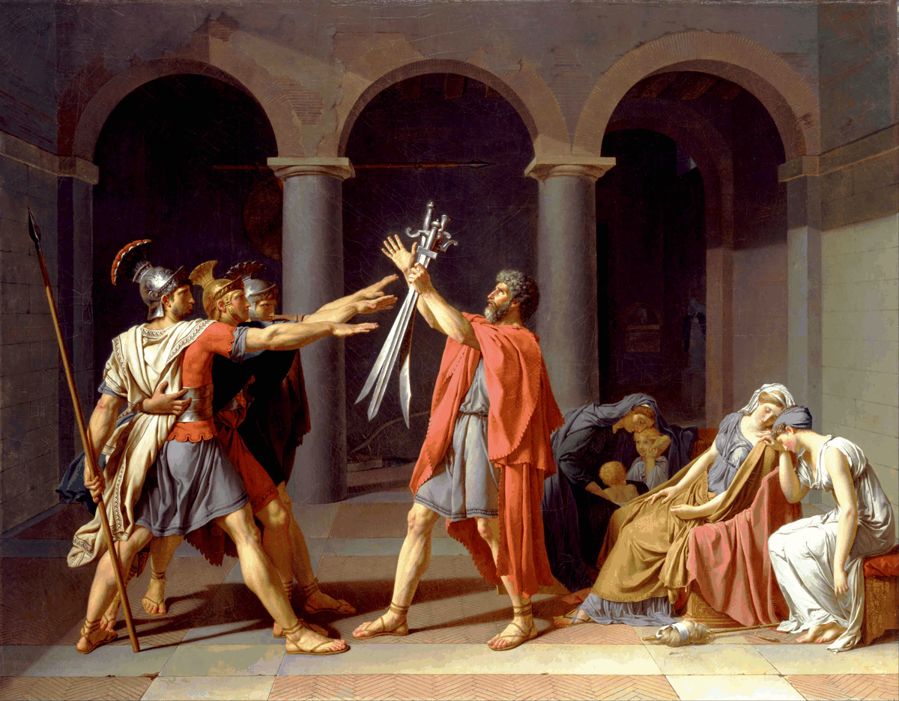
El juramento de los Horacios,
Jaques-Louis David, 1784
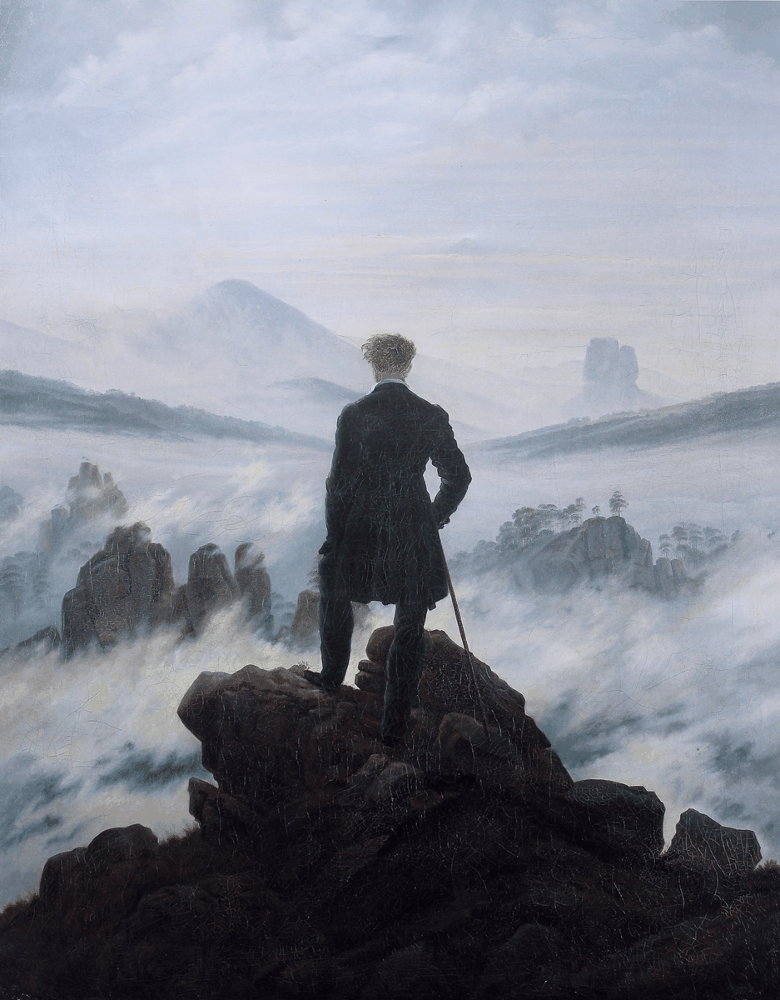
Caminante sobre un mar de nubes,
Caspar David Friedrich (1818)
EL ROMANTICISMO. Características generales
En España, el Romanticismo, movimiento ideológico y estético, se inicia en 1834 con el regreso de los liberales exiliados tras la muerte de Fernando VII.
Subjetivismo
Importancia de los sentimientos individuales, frecuentemente exaltados o melancólicos. El individualismo romántico se traduce en rebeldía contra las normas estéticas y sociales.
Evasión de la realidad
A través del tiempo (novelas históricas) y del espacio (escenarios lejanos y exóticos).
Importancia del paisaje
Forma de mostrar sus sentimientos.
Irracionalismo y desmesura
Desaparece la mesura, la medida, la armonía y la proporción que dan paso a la belleza de la noche, de lo oscuro, de lo desmesurado.
Libertad creadora
Las reglas del arte se ignoran. Así, mezclan en la misma obra la prosa y el verso, o fragmentos líricos, narrativos y dramáticos.
Propuesta de Trabajo
Realiza las actividades en tu cuaderno:
EL ROMANTICISMO. La poesía
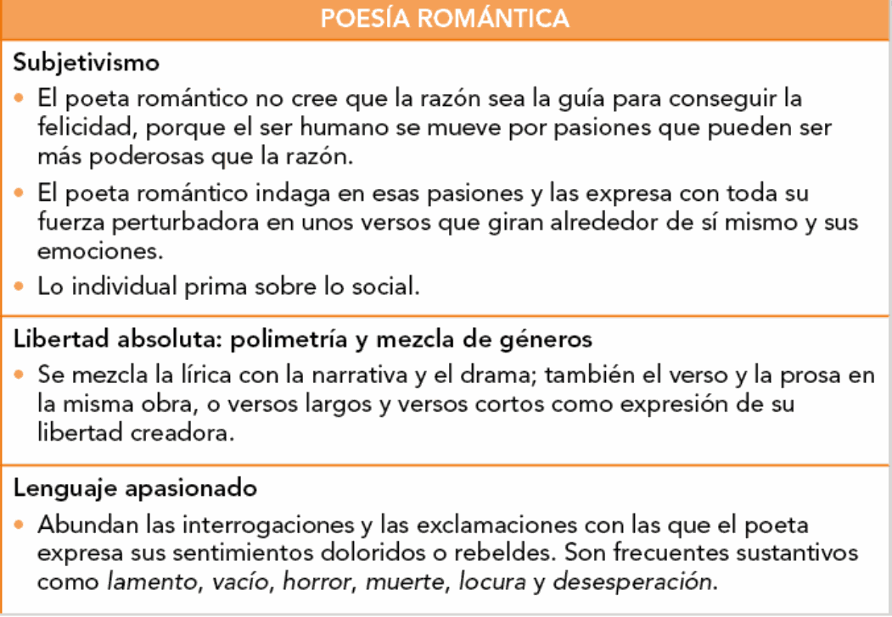
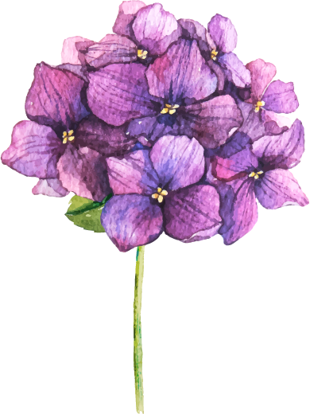
EL ROMANTICISMO. La poesía
José de Espronceda (1808-1842)
Espronceda representa al poeta romántico por excelencia: exaltado, rebelde y apasionado.
De ideología liberal, fue perseguido por este motivo y padeció el exilio.
Temas
Patriotismo, protesta política, desengaño vital, personajes marginales.
Características
Estilo sonoro e intenso (rimas agudas, exclamaciones, interrogaciones retóricas, intensa adjetivación). Polimetría.
Obras
- Poesía lírica: La canción del pirata
- Poesía narrativa: El estudiante de Salamanca
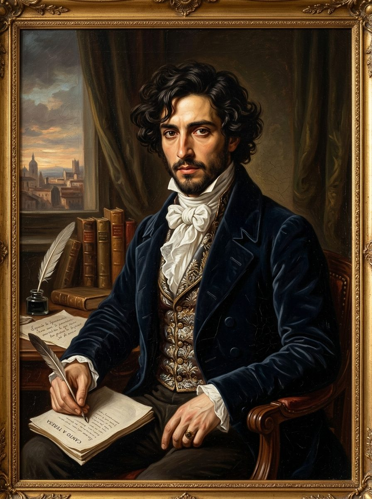
Lectura y Análisis
Analiza el poema de Espronceda:
EL ROMANTICISMO. La poesía
Gustavo Adolfo Bécquer (1836-1870)
Principal representante de la poesía posromántica.
En su obra aparecen todas las características de esta etapa:
- ❧ Lengua poética sencilla y natural.
- ❧ Interés por el cantar popular.
- ❧ Intimismo.
Obra:
Rimas y leyendas (1871 - publicación póstuma)
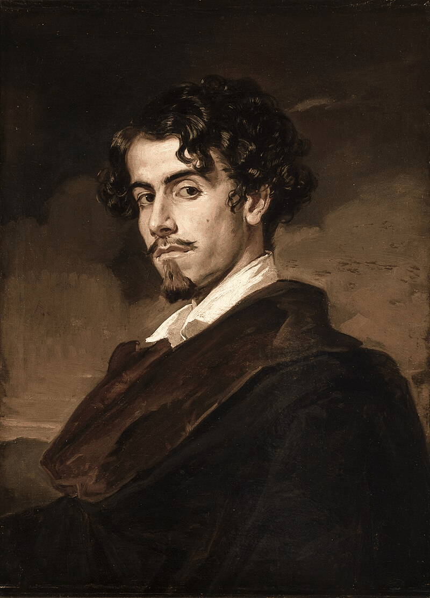
EL ROMANTICISMO. La poesía
Gustavo Adolfo Bécquer (1836-1870)
Características
Lenguaje muy trabajado para conseguir una apariencia de sencillez.
Recursos comunes con la poesía tradicional:
- Rima asonante.
- Mezcla de versos cortos y largos que aumentan el ritmo del poema.
Figuras estilísticas que refuerzan el ritmo:
- Anáforas
- Paralelismos
- Antítesis
Comparaciones y metáforas con base en la naturaleza.
Comentario de Rimas
Realiza en el cuaderno las actividades propuestas:
EL ROMANTICISMO. La poesía
Escritoras románticas
Rompieron las convenciones sociales que les impedían acceder a los estudios superiores o dedicarse a la literatura. Eran consideradas mujeres disfuncionales o "locas".
Gertrudis Gómez de Avellaneda (1814-1873)
- Originaria de Cuba → temas antiesclavistas.
- Poemas melancólicos y pesimistas sobre el amor y la existencia.
Carolina Coronado (1823-1911)
- Educada en un ambiente liberal.
- Temas: la opresión y la esclavitud que domina el “destino femenino”.
- Intimista, similar a Bécquer.
EL ROMANTICISMO. La poesía
Escritoras románticas
Rosalía de Castro (1837-1885)
La gran voz de la literatura gallega del siglo XIX. Su poesía exalta la nostalgia (morriña), la injusticia social y la dureza del destino.
Obras clave:
- Cantares gallegos
- Follas novas
- En las orillas del Sar
Comentario de texto
La Canción del Pirata
Tierra Santa (I y II)
EL ROMANTICISMO. La prosa
El héroe individual frente a cualquier tipo de opresión.
El pasado como escenario ideal para la idealización novelesca.
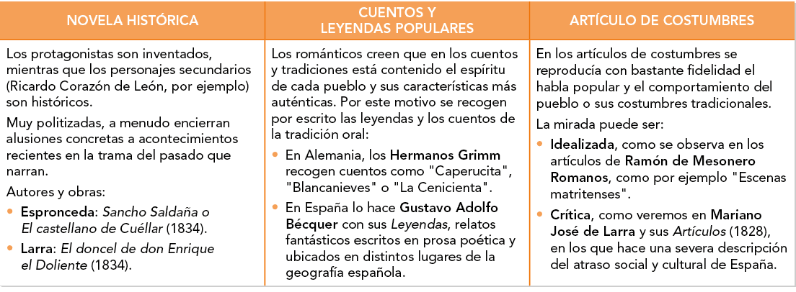
EL ROMANTICISMO. La prosa
Mariano José de Larra (1809-1837)
- ❦ Vida atormentada y compleja.
- ❦ Periodista relevante de su época.
- ❦ Principal obra: artículos periodísticos.
- Artículos de crítica literaria
- Artículos de costumbres
- Artículos políticos
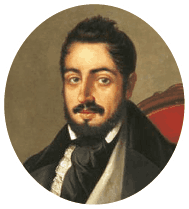
EL ROMANTICISMO. La prosa
Mariano José de Larra (1809-1837)
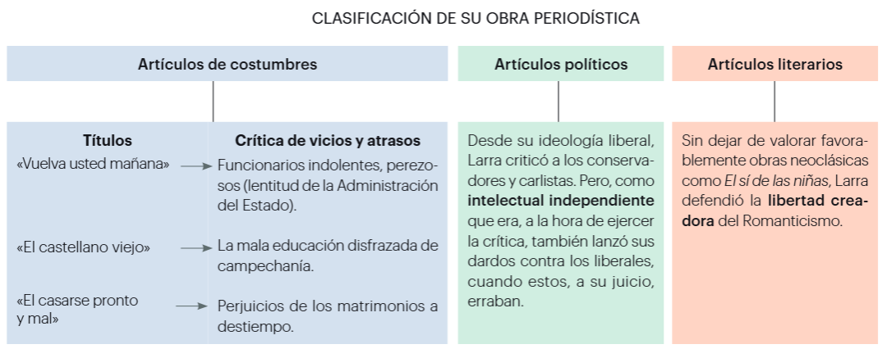
Análisis de Artículos
Lee los artículos de Larra y responde:
EL ROMANTICISMO. El teatro
Fue el género de más éxito del Romanticismo.
Características
Las obras rompen la unidad de acción, de tiempo y de lugar (regla de las tres unidades).
Mezclan lo trágico con lo cómico y la prosa con el verso.
La escenografía es muy importante.
El final trágico de los protagonistas.
EL ROMANTICISMO. El teatro
Duque de Rivas (1792-1865)
Don Álvaro o la fuerza del sino
José Zorrilla (1817-1893)
Don Juan Tenorio
- Creación del personaje y mito del “Don Juan”.
- Escrita íntegramente en verso.
Estudio de Don Juan
Realiza la actividad sobre el teatro romántico: